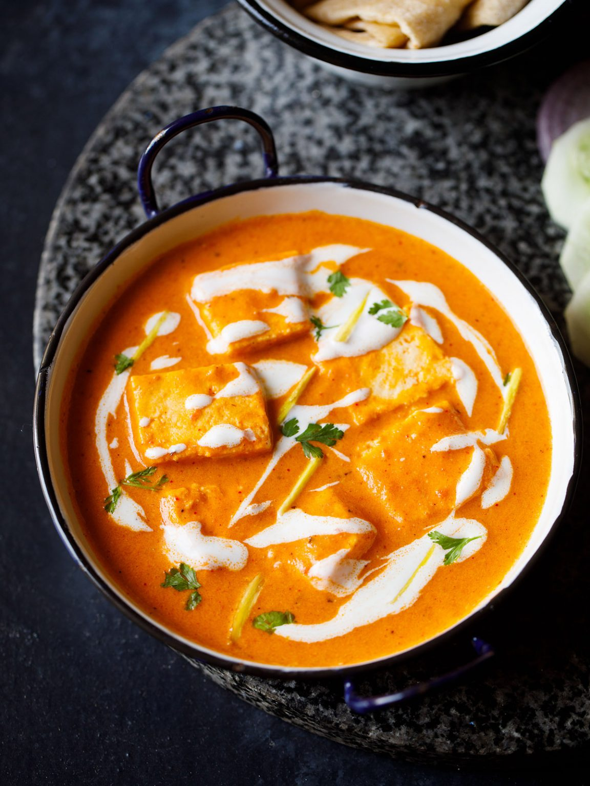

Paneer Butter Masala

Paneer Butter Masala is one of India’s most popular paneer gravy recipe.
This recipe with Indian cottage cheese cubes in a creamy tomato sauce is one
that I have been making for a long time. With my step-by-step guide
you can easily make this restaurant style paneer butter masala at home!
This Paneer Butter Masala recipe is a rich and creamy dish of
paneer (cottage cheese) in a tomato,
butter and cashew sauce (known as Makhani gravy).
Ingredients :-
- Ripe red juicy tomatoes
- Cashews
- Cream
- Butter
- Paneer
-
Spices & Herbs :-
- Kashmiri red chilli powder (For that brilliant orange color)
- Cayenne pepper or Paprika
- Garam Masala Powder
- Kasuri Methi (Kasuri methi which are dried fenugreek leaves also add a good flavor)
- Coriander leaves (Optionl, skip it if you do not have.)
Steps :-
-
Soak 18 to 20 cashews in ⅓ cup hot water for 20 to 30 minutes.
-
When the cashews are soaking, you can prep the other ingredients
like chopping tomatoes, chopping and preparing the ginger-garlic paste,
slicing paneer etc.
-
Crush 1-inch ginger + 3 to 4 medium-sized garlic to a paste in a mortar
pestle to a semi-fine or fine paste. Keep aside.
Don’t add any water while crushing ginger & garlic.
-
After 20 to 30 minutes, drain the water and add the soaked
cashews in a blender or mixer-grinder. Also, add 2 to 3 ta
blespoons fresh water or as required.
-
Blend to a smooth paste without any tiny bits or chunks
of cashews. Remove the cashew paste in a bowl and set aside.
-
In the same blender add 2 cups of diced or roughly chopped tomatoes.
No need to blanch the tomatoes before blending.
-
Blend to a smooth tomato puree. Set aside.
Don’t add any water while blending the tomatoes.
-
Heat a thick bottomed pan or a heavy pan. Keep the flame to a low or medium-low.
Add 2 tablespoons butter OR 1 tablespoon oil + 1 or 2 tbsp butter in a pan.
(Adding oil prevents the butter from browning too quickly.
You can even add 3 to 4 tablespoons butter for a rich buttery version.
Both salted or unsalted butter can be added.)
-
Keep the flame to a low. Add 1 medium-sized tej patta (Indian bay leaf).
Fry for 2 to 3 seconds or till the oil becomes fragrant from the aroma of the tej patta.
-
Add the prepared crushed ginger-garlic or 1 teaspoon ready ginger-garlic paste.
-
Fry for some seconds till the raw aroma of the ginger-garlic disappears.
-
Pour the prepared tomato puree. Be careful while adding the puree as it may splutter.
-
Mix it very well with the butter.
-
Begin to cook the tomato puree on a low to medium-low flame. Stir at intervals.
-
The tomato puree mixture will start simmering.
-
In case the tomato puree splutters too much while cooking then cover
the pan partly with a lid or cover fully with a splatter lid (channi lid).
the tomato puree might splutter if there is more water content in the tomatoes.
-
Do stir at intervals.
-
Simmer the puree for 5 to 6 minutes.
-
Then add 1 teaspoon Kashmiri red chilli powder or deghi mirch.
You can even add ½ teaspoon Kashmiri red chilli powder or ¼ to ½ teaspoon
of cayenne pepper or paprika or any other variety of red chilli powder.
-
Mix well and continue to stir and sauté the tomato puree.
-
Sauté till the butter starts leaving the sides of the pan and the
entire tomato puree mixture comes together as a whole.
This entire cooking and sautéing of the tomato puree
take about 14 to 17 minutes on a low flame to medium-low flame.
Time will vary depending on the thickness of the pan, size,
the intensity of flame etc.
-
Now add the prepared cashew paste.
-
Mix the cashew paste very well with the cooked tomato puree and
continue to stir and sauté on a low to medium-low flame.
Stir non-stop after adding cashew paste.
-
Sauté till the cashew paste is cooked and again the oil will
start to leave the sides of the masala. The cashew will begin to cook fast.
Approx 3 to 4 minutes on a low flame. So keep on stirring non-stop.
-
Next add 1.5 cups water.
-
Mix the water very well with the tomato-cashew makhani masala. If there
are lumps of the tomato-cashew masala, then break with a spoon.
You can even use a wired whisk for mixing.
-
Let the curry simmer and come to a boil. Stir occasionally.
-
After 2 to 3 mins, add ginger julienne (about 1-inch ginger –
cut in julienne (thin matchstick-like strips). Reserve a few for garnishing.
The curry will also begin to thicken.
-
After 3 to 4 minutes, add 1 or 2 slit green chillies.
-
Also add salt as per taste and ½ to 1 teaspoon sugar (optional).
You can add sugar from ¼ tsp to 1 teaspoon or more depending on the sourness of the tomatoes.
Sugar is optional and you can skip it too.
If you add cream, then you will need to add less sugar
-
Mix very well and simmer for a minute.
-
After the gravy thickens to your desired consistency,
then add the paneer cubes (200 or 250 grams).
Keep in mind the consistency you want before you add
paneer as you will be cooking the paneer for a few seconds.
You can also fry the paneer and then add the paneer once
the gravy has become creamy. I keep the gravy to a medium consistency gravy.
-
Stir and mix the paneer cubes gently in the gravy.
You can switch off the heat at this point.
If you find that the paneer cubes are still raw to taste,
then switch off heat after adding cream.
-
Now quickly add 1 teaspoon crushed kasuri methi leaves
(dry fenugreek leaves) and 1 teaspoon garam masala to the gravy.
Addition of crushed kasuri methi gives a restaurant flavor.
Kasuri methi is optional and can be skipped.
-
Next add 2 to 3 tablespoons of low-fat cream or 1 to 2 tablespoons of heavy whipping cream.
-
Stir gently but well and switch off the heat.
-
Serve Paneer Butter Masala hot garnished with 1 to 2 tablespoons of chopped
coriander leaves (cilantro) and the remaining ginger julienne.
You can also drizzle some cream or dot with butter while serving.
| Prep Time |
Cook Time |
Total time |
Difficulty Level |
| 10 mins |
30 mins |
40 mins |
Easy |
Go to Top of Page | Home page | Credit for Recipe | Recipe Project by Yash.